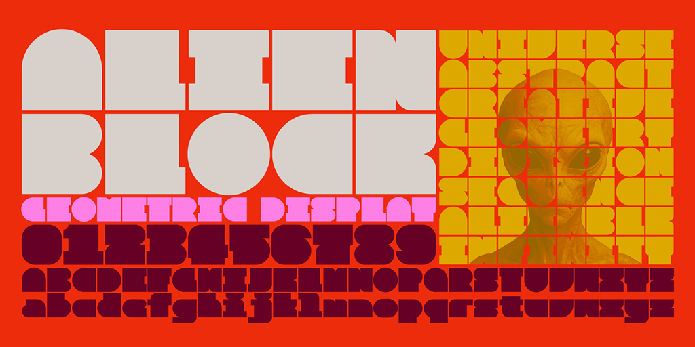

Alien Block is a display typeface designed to expand the possibilities of logos, titles, and typographic composition. It combines the controlled width of monospaced fonts with the optical spacing of proportional fonts, exploring a hybrid approach that brings together the strengths of both systems.
Most glyphs share a common base width, while selected characters and symbols are intentionally adjusted to maintain visual balance. This approach achieves both structural consistency and expressive freedom. Letters can be arranged like aligned tiles or staggered bricks, enabling a wide range of modular layouts. Alien Block is optimized for short-form display use such as titles and visual compositions. Rather than focusing on long-form reading, it performs especially well in impactful and modular typographic contexts. Alien Block is designed so that anyone can intuitively explore modular typographic composition.
The space width is intentionally set to half of the base modular unit. This decision is made for practical reasons: by inserting two consecutive spaces, users can easily restore the original grid alignment. Rather than being a decorative choice, this spacing system functions as a practical tool for modular layout control in display-oriented use cases.
To contribute, see github.com/koci-design/AlienBlock.
